6.2 Open Application Model 이해 및 예제 애플리케이션 배포하기
참고
Open Application Model
Open Application Model(OAM)은 컨테이너 또는 오케스트레이터 또는 인프라 보다는 개발자가 애플리케이션에 집중할 수 있도록 하고자 하는 모델입니다. 애플리케이션을 쿠버네티스상의 컨테이너로 배포하기 위해서 배포 외에도 모니터링, 트래픽 처리 등 추가 설정을 위해 여러가지 자원들을 배포해야 하고 그에 따른 YAML 파일들을 정의해야 합니다. 이 부분을 개발자는 애플리케이션에 초점을 맞추고, 운영, 관리 등을 위해 필요한 많은 부분은 템플릿 등을 통해 표준화하는 것을 지향하고 있습니다. Open Application Model은 현재 0.3 까지 나왔으며, Verrazzano에서는 Open Application Model 0.2.1을 기반으로 하고 있어 최신 버전과 약간의 문법 차이가 있습니다.
주요 컨셉
-
https://verrazzano.io/latest/docs/concepts/verrazzanooam/

-
Component: 하나의 애플리케이션, 쉽게 컨테이너 앱라고 생각하면 될 것 같습니다. 이 컴포넌트에는 유형이 있을 수 있고, Verrazzano에서는 Helidon 프레임워크를 통해 개발한 앱이냐, WebLogic 앱이냐, Coherence 서버냐 등이 있을 것이고, 그 유형에 따라 배포시나 모니터링시의 특성이 있을 것입니다. 그래서 Component에서 어떤 Workload 타입인지를 지정하게 됩니다.
-
Workload: 어떤 타입인지 표시하는 것으로, WorkloadDefinition을 통해 정의할 수 있으며, VerrazzanoHelidonWorkload, VerrazzanoWebLogicWorkload 등 사전에 Verrazzano에서 정의한 유형 또는 Deployment, ConfigMap 등등 Kubernetes의 기본 자원형태을 그대로 사용 할 도 있습니다.
-
Application Configuration: 하나의 애플리케이션을 뜻하여, 여러 Component를 포함하게 됩니다. 하나의 컨테이너 앱에 관련된 설정을 가진 형태이거나, 여러 컨터이너를 Component로 가진 패키징된 앱의 형태일 수도 있습니다.
-
Trait: 하나의 Component에 운영, 모니터링 등의 필요에 의해 추가 설정하는 사항입니다. 사이트의 문서 예제에서 보면, 메트릭 수집 설정, Ingress 설정 등이 일반적인 예로 쓰입니다.
-
Scope: 여러 Component에 대한 한번에 설정하는 사항입니다.
Helidon 예제 애플리케이션 배포하기
Helidon 프레임워크를 사용해서 개발한 Java 애플리케이션을 배포하는 예제를 통해 Open Application Model을 사용해서 Verrazzano에서 배포하는 것을 확인해 봅니다. Java로 개발하여 컨테이너 이미지까지 빌드하는 방법은 어렵지 않으니, 그 이후에 Verrazzano 배포하는 부분을 확인해 봅니다.
예제 애플리케이션: Helidon 샘플로, REST API로 /greet 로 요청하면, 환영 메시지가 오는 간단한 컨테이너 애플리케이션
Component 작성
-
Verrazzano에서 사용하는 Kubernetes CRD인 Component를 정의합니다.
- spec.workload: Component의 Workload를 정의합니다.
- spec.workload.kind: 일반유형이 아닌 Helidon 기반 컨테이너를 위해 Verrazzano가 사전에 정의한 VerrazzanoHelidonWorkload Workload Definition을 선택
- spec.workload.spec: VerrazzanoHelidonWorkload의 스펙으로 Kubernetes Deployment 스펙을 그대로 사용
apiVersion: core.oam.dev/v1alpha2 kind: Component metadata: name: hello-helidon-component namespace: hello-helidon spec: workload: apiVersion: oam.verrazzano.io/v1alpha1 kind: VerrazzanoHelidonWorkload metadata: name: hello-helidon-workload labels: app: hello-helidon spec: deploymentTemplate: metadata: name: hello-helidon-deployment podSpec: containers: - name: hello-helidon-container image: "ghcr.io/verrazzano/example-helidon-greet-app-v1:0.1.10-3-20201016220428-56fb4d4" ports: - containerPort: 8080 name: http
Application Configuration 작성
-
Verrazzano에서 사용하는 Kubernetes CRD인 Application Configuration을 정의합니다.
- spec.components.componentName: 방금 정의한 Component인 hello-helidon-component을 뜻합니다. spec.components 아래에 여러 Component가 추가될 수 있는 것을 알 수 있습니다.
- spec.components.traits.trait: 대상 Component에 운영, 관리상 추가할 부분을 정의합니다. 현재 IngressTrait, LoggingTrait, MetricsTrait를 제공하고 있습니다.
apiVersion: core.oam.dev/v1alpha2 kind: ApplicationConfiguration metadata: name: hello-helidon-appconf namespace: hello-helidon annotations: version: v1.0.0 description: "Hello Helidon application" spec: components: - componentName: hello-helidon-component traits: - trait: apiVersion: oam.verrazzano.io/v1alpha1 kind: MetricsTrait spec: scraper: verrazzano-system/vmi-system-prometheus-0 - trait: apiVersion: oam.verrazzano.io/v1alpha1 kind: IngressTrait metadata: name: hello-helidon-ingress spec: rules: - paths: - path: "/greet" pathType: Prefix
애플리케이션 배포
-
namespace 생성
kubectl create namespace hello-helidon kubectl label namespace hello-helidon verrazzano-managed=true istio-injection=enabled -
Component 배포
kubectl apply -f https://raw.githubusercontent.com/verrazzano/verrazzano/v1.1.0/examples/hello-helidon/hello-helidon-comp.yaml -
Application Configuration 배포
kubectl apply -f https://raw.githubusercontent.com/verrazzano/verrazzano/v1.1.0/examples/hello-helidon/hello-helidon-app.yaml -
배포된 앱의 istio를 통해 등록된 ingress DNS 확인
kubectl get gateway hello-helidon-hello-helidon-appconf-gw \ -n hello-helidon \ -o jsonpath='{.spec.servers[0].hosts[0]}' -
실행예시
$ kubectl get gateway hello-helidon-hello-helidon-appconf-gw \ > -n hello-helidon \ > -o jsonpath='{.spec.servers[0].hosts[0]}' hello-helidon-appconf.hello-helidon.myenv.thekoguryo.ml -
애플리케이션 테스트
확인된 https://{ingress DNS 주소}/greet 주소로 정상 호출되는 것을 알 수 있습니다.
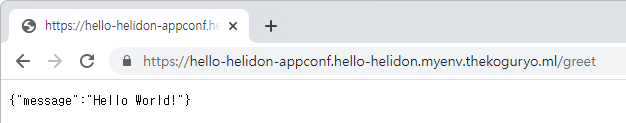
모니터링
Verrazzano 콘솔
-
Verrazzano Console에 로그인합니다.
예, https://verrazzano.myenv.thekoguryo.ml
- 접속 유저: verrazzano
- 암호: 설치시 초기화한 암호
-
왼쪽 Resources 항목에서 Application과 Component 항목에서 배포된 앱 정보를 확인할 수 있습니다.
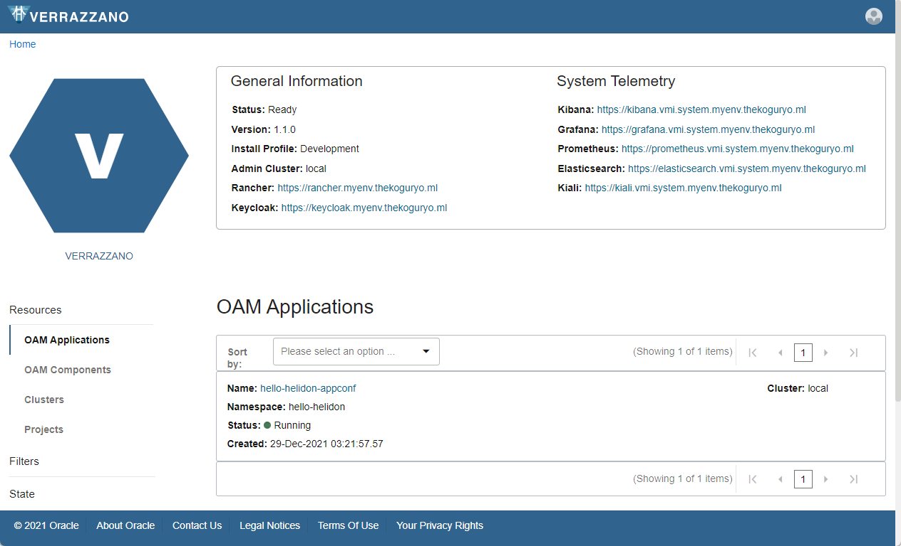
로그 모니터링(Elasticsearch / Kibana)
-
Verrazzano 콘솔에서 Kibana 링크를 클릭합니다. SSO 구성이 되어 추가 로그인은 필요없습니다.
-
내비게이션 메뉴에서 Stack Management를 선택합니다.
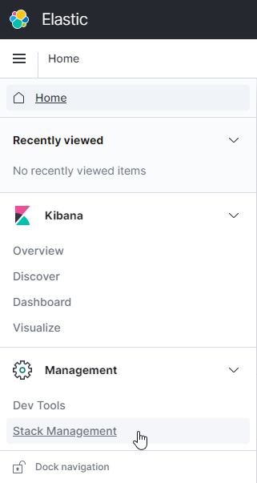
-
Index Pattern > + Create index pattern 을 클릭합니다.
-
가능한 패턴에 예제앱을 위해 추가한 namespace를 포함하여 여러 소스가 보입니다.
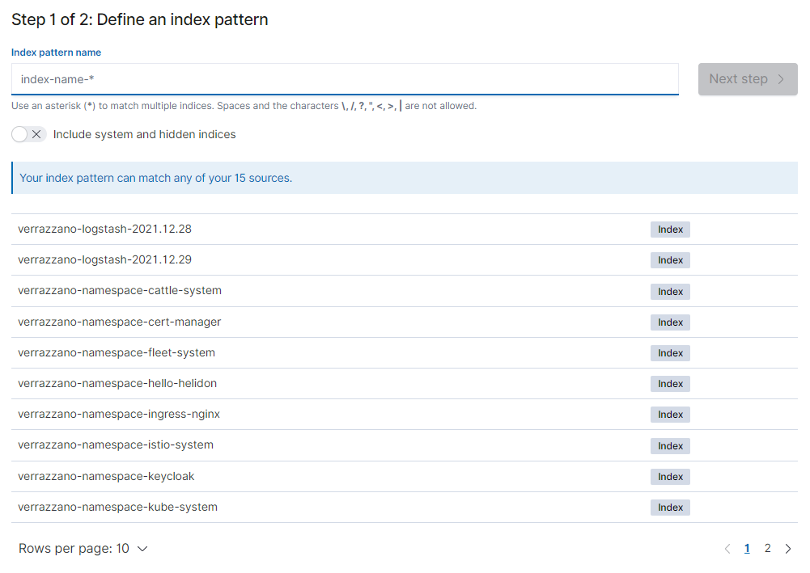
-
표현식을 사용해도 되지만, 여기서는 예제 namespace 이름을 패턴 이름으로 입력합니다. 예, verrazzano-namespace-hello-helidon
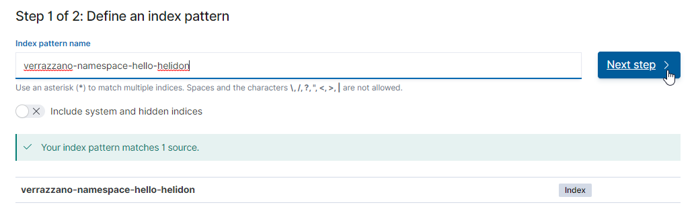
-
Time field로 @timestamp 선택
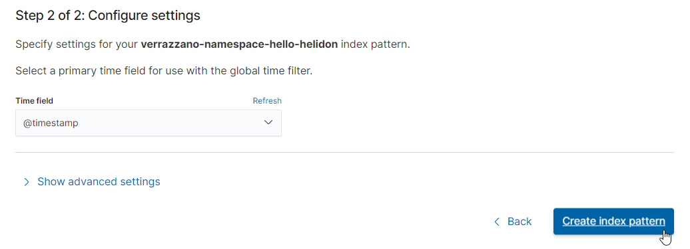
-
추가완료
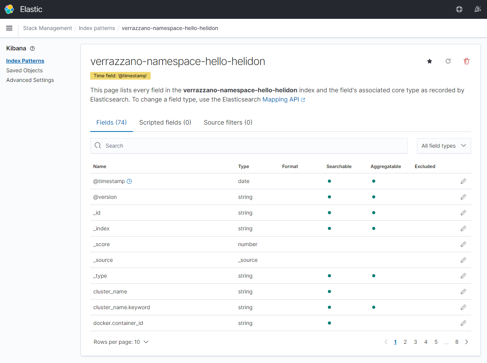
-
내비게이션 메뉴에서 Kibana > Discover 메뉴로 이동합니다.
-
생성한 인덱스 패턴에 대해 수집된 로그, 대상 namespace 상의 전체 수집된 로그가 보입니다.
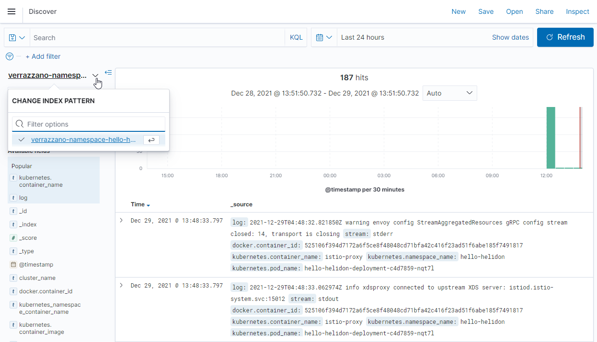
-
필터 적용후 정확하게 로그를 확인할 수 있습니다.
$ kubectl logs -n hello-helidon hello-helidon-deployment-c4d7859-nqt7l -c hello-helidon-container ... 2021.12.29 03:22:44 INFO io.helidon.microprofile.server.ServerCdiExtension Thread[main,5,main]: Server started on http://localhost:8080 (and all other host addresses) in 3075 milliseconds (since JVM startup). http://localhost:8080/greet 2021.12.29 03:22:44 INFO io.helidon.common.HelidonFeatures Thread[features-thread,5,main]: Helidon MP 2.3.2 features: [CDI, Config, Fault Tolerance, Health, JAX-RS, Metrics, Open API, REST Client, Security, Server, Tracing]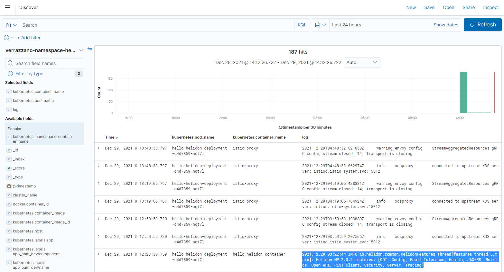
메트릭 모니터링(Prometheus / Grafana)
-
Verrazzano 콘솔에서 Grafana 링크를 클릭합니다. SSO 구성이 되어 추가 로그인은 필요없습니다.
-
내비게이션 메뉴에서 Dashboard > Manage를 선택합니다.
-
기본 제공하고 있는 대쉬보드 중에 Helidon 대쉬보드를 선택합니다.
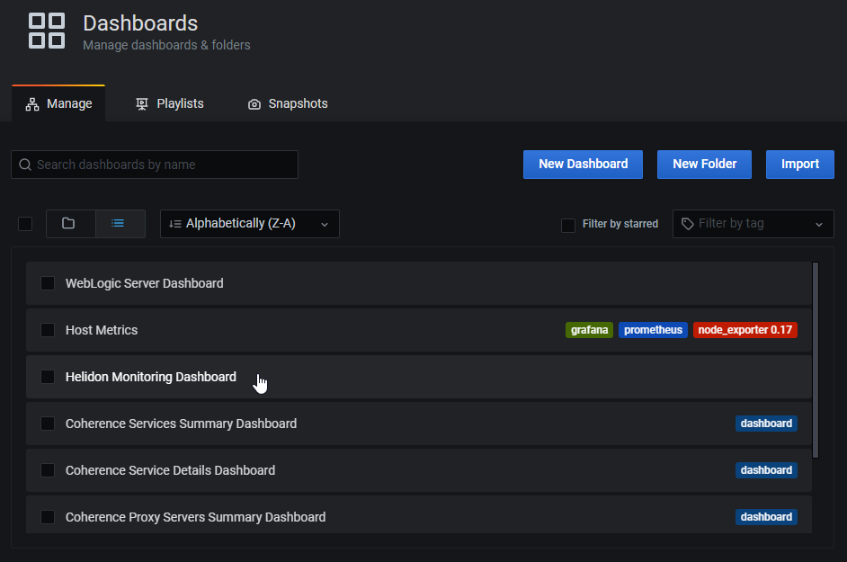
-
Helidon 대쉬보드에서 앞서 배포한 앱의 상태를 확인할 수 있습니다.
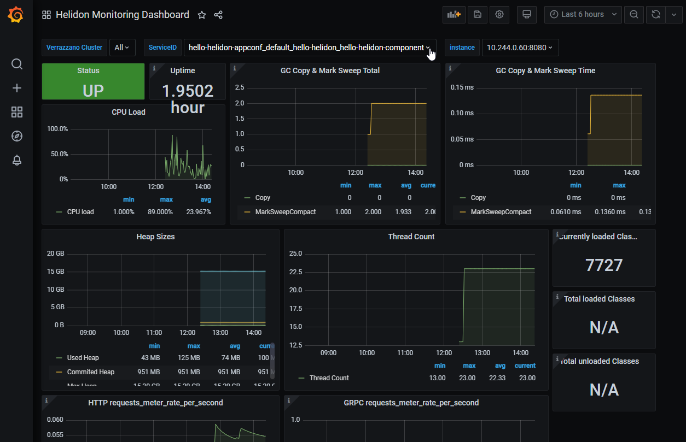
서비스 메쉬 모니터링(Kiali)
-
Verrazzano 콘솔에서 Kiali 링크를 클릭합니다. SSO 구성이 되어 추가 로그인은 필요없습니다.
-
왼쪽 메뉴에서 Graph를 클릭합니다.
-
대상 Namespace를 선택하면, 아래와 같이 상호 호출 관계를 볼 수 있습니다. 단일 서비스로 구성된 예제로 간단히 보입니다.
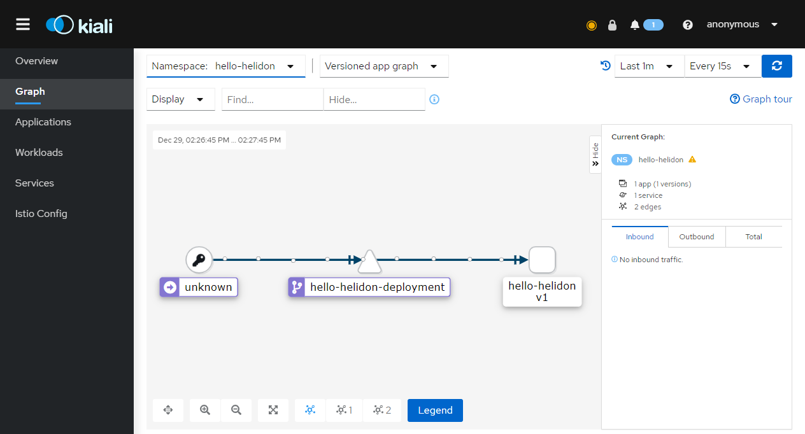
추가 참고사항
-
오픈소스 클라이언트 툴인 octant를 ApplicationConfiguration과 관계되 자원을 확인하였습니다.
- ApplicationConfiguration과 Component에서 직접 명시한 내용 자원에 추가하여 Deployment(하위 포함), Service, istio Gateway, Virtual Service가 배포되는 것을 확인할 수 있습니다.
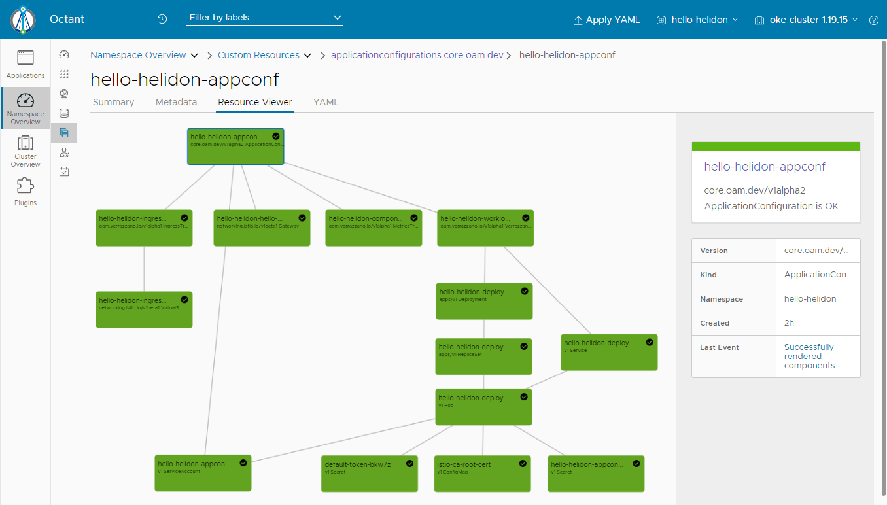
** 이 글은 개인으로서, 개인의 시간을 할애하여 작성된 글입니다. 글의 내용에 오류가 있을 수 있으며, 글 속의 의견은 개인적인 의견입니다. **